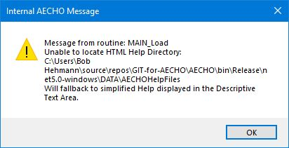
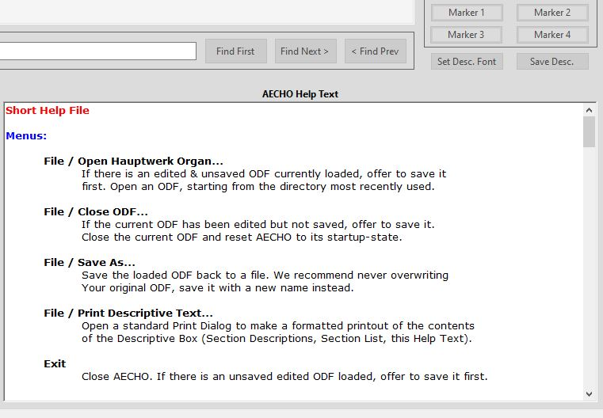

| Sub-Menu Choice |
Shortcut |
Purpose / Description |
|---|---|---|
| View Help |
Ctrl+F1 |
Opens AECHO's Help subsystem. Preferentially,
AECHO provides its Help through a series of hyperlinked HTML
screens, viewable from any common Web Browser, such as Edge,
Chrome, Firefox, Opera... AECHO will display the top-level
Help screen in the user's default browser. If for some
reason the HTML files are not present or accessible, AECHO
will issue a warning when it starts, then fallback to a
simpler, one (long!) page Help text displayed in the
Descriptive Text Area - from there, it may be printed (menu
> File > Print
Descriptive Text...). Startup warning displayed if HTML Help is not accessible: Non-HTML Help display in the Descriptive Text Area:  |
| About AECHO |
F1 |
Displays AECHO's About-Box, a summary form
containing the program's version and contact/support
information. This form remains visible until dismissed by
clicking on either its OK button or on the X at the
upper-right corner of the form. This form need not be
dismissed before continuing work with other AECHO forms. |